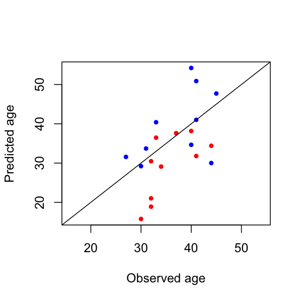

5.7. Age-prediction from the NREM EEG
In this section, we apply a previously developed model to predict
biological/brain age based on the sleep EEG, using Luna's
PREDICT command to
apply a model developed by Sun et al
(2019) which is based on
13 NREM sleep EEG. Technically, the model was trained on
contra-lateral mastoid referenced data, but for the purposes of this
walkthrough, using the linked mastoid data will be sufficient.
Applying the basic model
The model files are bundled with the walkthrough data, in the
work/data/aux/models/ folder:
-
a Luna script that derives all 13 features and applies the model
-
a file that specifies the features weights for the model and some other parameters
-
a file that contains a normalized training feature matrix, used in kNN missing data imputation
You can review the steps in m1-adult-age-luna.txt:
-
it uses Luna's cache mechanism to store and pass outputs from Luna commands to the
PREDICTcommand at the end of the file -
it also uses Luna's freeze/thaw mechanism to derive statistics from N1, N2 and N3 stages
-
most features are derived from applications of commands such as
MTM,STATSandSPINDLESthat match the settings used to build the model
The script expects the following variables to be defined:
-
${age}which gives the observed age (in years) of each individual; these are defined inwork/data/aux/master.txtand so we pass that file to Luna via thevarsspecial command option, so Luna is able to define individual-specific variables (i.e. that are substituted in the script each time it is run for a given person) -
${cen}that lists one or more central electrodes -
${th}that specifies the SD threshold for missing data -
${mpath}that specifies the model folder path (so Luna knows where to look for the model specification/data files)
We can apply this model to all 20 individuals by executing the following:
luna c.lst vars=work/data/aux/master.txt cen=C3,C4 th=3 \
mpath=work/data/aux/models/ \
-o out/pad.db < work/data/aux/models/m1-adult-age-luna.txt
We'll save the key predictions into res/pad.base:
destrat out/pad.db +PREDICT > res/pad.base
and the feature-level outputs in res/pad.ftr:
destrat out/pad.db +PREDICT -r FTR > res/pad.ftr
Looking at the key predictions in R:
d <- read.table("res/pad.base",header=T,stringsAsFactors=F)
head(d)
ID DIFF NF NF_OBS OKAY Y Y1 YOBS
1 F01 -9.2075735 13 13 1 36.05138 31.79243 41
2 F02 -13.0946082 13 13 1 27.98321 18.90539 32
3 F03 0.6090523 13 13 1 44.00972 37.60905 37
4 F04 -10.9771159 13 13 1 30.10070 21.02288 32
5 F05 -14.2248889 13 13 1 25.92378 15.77511 30
6 F06 -1.5276159 13 13 1 39.55020 30.47238 32
The primary metric is DIFF, which is the predicted age (Y1) minus the observed age (YOBS).
In the context of brain age prediction, this is often called PAD (predicted age difference). As the PREDICT
command is generic, and not solely developed for the purpose of age prediction, it is labeled DIFF here instead, but
we'll use these two terms interchangeably below.
The average PAD is not significantly different from zero in this sample, suggesting that this is a relatively unbiased estimate when applied to the general population.
t.test( d$DIFF )
t = -1.102, df = 19, p-value = 0.2842
In contrast, predicted age (Y1) is significantly correlated with observed age:
cor.test( d$Y1 , d$YOBS )
t = 2.8724, df = 18, p-value = 0.01013
cor
0.5606231
Sex differences in PAD
We can also look at possible sex differences in the PAD. Rather than merge the phenotype data,
we can create a quick indicator of sex, here based on the ID labels (i.e. if starting with M):
d$MALE <- as.integer( grepl( "^M" , d$ID ) )
On average, males and females are well-matched
for chronological age, i.e. there is no significant difference in YOBS:
t.test( d$YOBS ~ d$MALE )
Welch Two Sample t-test
t = -0.67903, df = 16.611, p-value = 0.5065
mean in group 0 mean in group 1
35.5 37.2
However, we do see a difference in PAD, with males having profiles of NREM sleep that are typically more consistent with older individuals (a PAD of +2.1 years on average), whereas females have profiles that are typically more consistent with younger individuals (a PAD of -6.1 years on average):
t.test( d$DIFF ~ d$MALE )
Welch Two Sample t-test
t = -2.6029, df = 16.899, p-value = 0.01863
mean in group 0 mean in group 1
-6.128250 2.133918
Plotting all the data colored by sex:
lim = range( d$YOBS , d$Y1 )
plot( d$YOBS , d$Y1 , pch=20, col = ifelse( d$MALE , "blue" , "red" ) ,
xlim = lim , ylim = lim , xlab="Observed age" , ylab="Predicted age" )
lines( c(0,100),c(0,100))

Feature-level analysis
Looking at the feature level outputs:
d <- read.table("res/pad.ftr",header=T,stringsAsFactors=F)
head(d)
We can tabulate the 13 features:
table( d$FTR )
alpha_bandpower_kurtosis_C_N2 alpha_bandpower_mean_C_N1
20 20
COUPL_OVERLAP_C delta_alpha_mean_C_N3
20 20
delta_bandpower_kurtosis_C_N2 delta_bandpower_mean_C_N3
20 20
delta_theta_mean_C_N3 DENS_C
20 20
kurtosis_N2_C kurtosis_N3_C
20 20
sigma_bandpower_kurtosis_C_N2 theta_bandpower_kurtosis_C_N2
20 20
theta_bandpower_kurtosis_C_N3
20
Per individual, the primary metrics are X (the raw value for that
feature) and Z, the value derived after normalization (and
potentially missing data imputation). The B metric is the model
weight (and so the same for every individual), which indicates whether
the feature is expected to increase or decrease with age. Also, we
won't dwell on this here, but only two feature values were re-imputed
(REIMP) based on the 3 SD unit threshold, so overall these metrics
appear consistent with expectations.
d$MALE <- as.integer( grepl( "^M" , d$ID ) )
for (ftr in unique( d$FTR ) )
{
tt <- t.test( Z ~ MALE , data = d , subset = FTR == ftr )
cat ( ftr , round( tt$statistic,2) , round(tt$p.value,3) , "\n" , sep="\t" )
}
COUPL_OVERLAP_C -1.37 0.189
DENS_C -0.54 0.596
alpha_bandpower_kurtosis_C_N2 0.58 0.569
alpha_bandpower_mean_C_N1 0.14 0.893
delta_alpha_mean_C_N3 2.1 0.056 .
delta_bandpower_kurtosis_C_N2 2.76 0.013 *
delta_bandpower_mean_C_N3 2.17 0.049 *
delta_theta_mean_C_N3 2.04 0.062 .
kurtosis_N2_C 3.98 0.001 *
kurtosis_N3_C 2.3 0.036 *
sigma_bandpower_kurtosis_C_N2 -1.67 0.114
theta_bandpower_kurtosis_C_N2 1.79 0.095 .
theta_bandpower_kurtosis_C_N3 2.33 0.033 *
We see the apparent sex difference in PAD was not driven by a single, extreme feature: 5 of the 13 features show nominal (p<0.05) male/female differences, and 3 more show p<0.1 trends in this N=20 sample.
Summary
In this section we've seen how a NREM sleep based prediction of biological or brain age can be computed from EEG data, and we found some suggestions in this small sample that males and females show different rates of brain aging.
We've also had a glimpse of Luna's generic PREDICT command, which is
designed to allow users to build and apply their own linear models for
prediction, although this advanced usage is beyond the scope of this
walkthrough.
In the next section we'll consider linear models and multiple test correction.